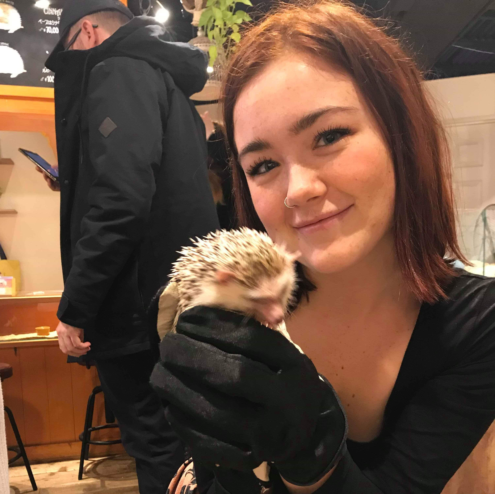

Hettie McConnell
Hello and welcome to my Founders and Coders application page, thank you for visiting! Since graduating in 2018 I have found work in a few different industries, but often found myseslf restless and bored with the repetition of mundane tasks. I have realised I would be much better suited to skill based work. I have become obsesesed with the ability of creating something out of nothing, which coding has given me, and hope to further my learning through Founders and Coders